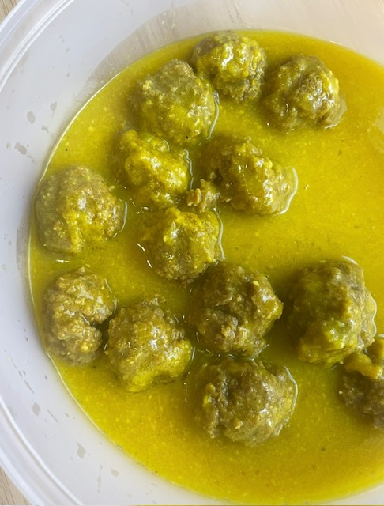

Home
Meatballs with Almond Sauce

Description
This is a step by step recipe for meatballs with almond sauce.
Fried potatoes or rice work quite well as a side dish for this.
Ingredients
- 1 teaspoon of nutmeg
- 1 onion
- 5 garlic cloves
- 4 slices of stale bread
- A little parsley
- Breadcrumbs
- 1 egg or 2
- 1/2 a glass of white wine
- Minced meat (prefereably from the butcher, beef and pork)
Steps
- In a pot, add the onion (roughly chopped, since it will be blended later),
the bread slices and the almonds. Add 1 teaspoon of salt and some oil.
Sauté until softened.
- Once the onion is tender, remove everything from the pot and blend with a
hand blender in a tall container. Return the blended mixture to the pot.
Add the white wine and enough water to fill the pot to just below halfway.
- Keep the sauce simmering on low heat. In a bowl, mix the minced meat with 1
chopped garlic clove, parsley, nutmeg, and 2 teaspoons of salt. Add the egg.
Mix with your hands, gradually adding breadcrumbs until the mixture no longer
sticks to your hands.
- Increase the heat, form meatballs, and add them to the pot with the sauce.
Cook for about 30 minutes, or longer if the sauce needs to get texture.